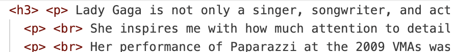
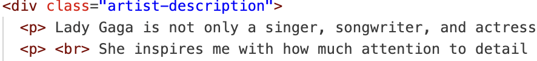
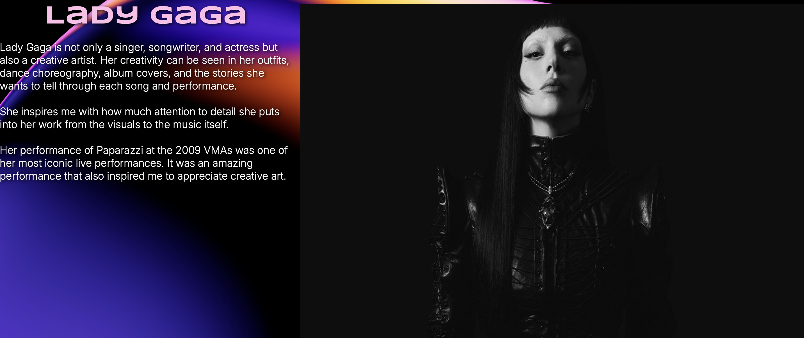
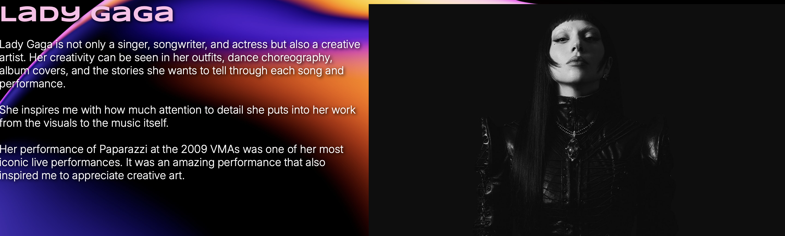

10/21/26 Before, I wanted to use "h3" to style all the paragraphs for my three artists at once instead of styling them separately. However, I realized that "h3" is meant for headings, not for containing paragraphs, so I fixed it by using a "div" and gave it the class "artist-description" so that I could style all of the text at once.


After reading the peer review, I decided to adjust my Inspiration page. The picture took up too much space compared to the text, so I adjusted the width to give them a better balance. Before, the picture looked too dominant because the text was much shorter, so I changed the picture section to 53%. The picture is still slightly bigger but does not overpower the text. I think these adjustments make the layout look more balanced and organized.


I made the text bigger on my About page, as my partner recommended. I also changed the title for each page, before it was template.
Based on my peer review, I also added my social links to the footer of my Home page. I added my Instagram and email so viewers can easily connect with me. I used Flexbox to organize the links and added some spacing between them to make the footer look clean and simple.